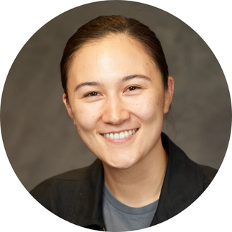

Education /
Papers /
Research /
Teaching /
CV
|
Alice Cho Timken
I am a PhD candidate at the Maxwell School at Syracuse University studying high courts, judicial independence, and judicial behavior. I use quantitative and mixed methods approaches. My regional focuses are in North America and Europe.
I grew up in Albany, California. Before graduate school, I worked for an INGO in refugee rights and in marketing and e-commerce for consumer brands in New York City.
I received my master's degree in political science from New York University and bachelor's degree in politics from Pomona College in Claremont, California.
You can clone this website for your own use on Github.
Email | Bluesky | Twitter |
LinkedIn
|

|
PhD Political Science (Expected 2026)
Syracuse University, Syracuse, NY
2021-Present, ABD as of March 2024
|
Specialized Training
Certificate in University Teaching at Syracuse University (2023-Present)
LawTransform, Effects of Lawfare at University of Bergen (2025)
Empirical Implications of Theoretical Models at Emory University (2024)
Summer Institute in Computational Social Science at Rutgers University (2022)
|
MA Political Science
New York University, New York, NY
2019-2021
Thesis: “Networks, access and competition: immigrant social capital and US refugee integration”;
a large-N analysis of co-national social capital and refugee integration across US
states.
|
BA Politics
Pomona College, Claremont, CA
2012-2016
- Distinction in the Senior Exercise.
- International Study: Yonsei University,
Seoul, South Korea, Summer 2013; College Year in Athens, Athens, Greece, Fall 2014.
- NCAA DIII Basketball and Track and Field.
|
Timken, Alice C. "Ideology and Judicial Independence: Who Undermines Courts?" Working paper (under review).
Online | Materials
|
|
“The Changing Incidence of Free Speech Winners at the U.S. Supreme Court” (with Thomas M. Keck and Abigail Greenfield).
|
Research Assistant to Dr. Thomas M. Keck
Global Free Speech Repository (NSF Award 1535250), Syracuse, NY
2022-Present
|
Research Associate to Dr. Thomas M. Keck (previous Dr. Elizabeth F. Cohen)
Campbell Public Affairs Institute, Syracuse, NY
2022-Present
|
Research Associate
Moynihan Institute, Center for European Studies, Syracuse, NY
2023-Present
|
Research Assistant to Abby Córdova & Jessie Trudeau
Kellogg Institute, E-VAW Lab, University of Notre Dame
Fall 2024
|
Advocacy and Communications Associate
Asylum Access, Oakland, CA
2018-2021
|
Research and Writing Assistant
Center on International Cooperation (NYU), New York, NY
2020
|
|
Law and Society; Instructor of Record (Syrcause), 2025
|
|
Contemporary Political Philosophy; Prof. Elizabeth F. Cohen (Syrcause), 2022
|
|
Introduction to American Politics; Prof. Mark Brockway (Syrcause), 2022
|
|
Constitutional Law I; Prof. Thomas M. Keck (Syrcause), 2021
|
|
Contemporary African Politics; Prof. Gwyneth McClendon (NYU), 2020
|
|
US Foreign Policy; Prof. Jeffrey Togman (NYU), 2019-2020
|
|
Invited Talks
- "Ideology and Insurance" at IHS Workshop, Purdue University, IN, USA, 2025
- "Anti-system Parties and Judicial Independence" at Syracuse University, Syracuse, NY, 2024
- "Judicial Decision-making" at Bryn Mawr College, Bryn Mawr, PA, 2023
|
|
Grants and Awards
- Meiklejohn Award for work committed to open and just public life, 2023 ($3250)
- Kissel Award for research and teaching on civil liberties, 2023 ($1500)
- Maxwell Political Science Department Travel Grant, 2021-23 ($1400)
- Northeastern Political Science Assoc. Travel Grant, 2022 ($150)
- Point Foundation Semi-finalist, 2022
- American Political Science Assoc. Travel Grant, 2021 ($300)
- American Political Science Assoc. LGBT Travel Grant, 2021 ($300)
|
|
Conferences
- Bergen Exchanges on Law and Social Transformation (UiB-CMI Centre), 2025
- Nuffield College Early Career Workshop (University of Oxford), 2025
- Law and Society Association, 2025
- IHS Workshop on Limited Governance and Constitutionalism, 2025
- Northeastern Political Science Association, 2022, 2023, 2024
- American Political Science Association, 2021, 2024
- Empirical Implications of Theoretical Models (Emory University), 2024
- UT-Austin Graduate Student Conference in Public Law, 2022
- Rutgers Summer Institute in Computational Social Science, 2022
- New York State Political Science Association, 2020-2022
- CIPSS/CEPSI-CIPS Global Governance at McGill University, 2021
- Refugee and Migration Studies at York University, 2021
|
|
R, LATEX, STATA, APIs, Webscraping, Website Content Management (CMS), French (beginner) and Korean (beginner).
|
|
Last updated September 2025.
|
|
{kind=link}